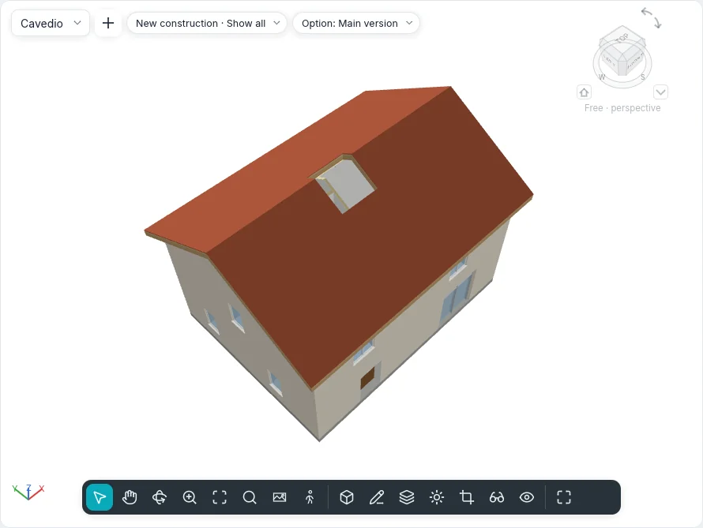

Openings
The Openings group of the Model and Structure tabs cuts holes that nothing fills: in floors, roofs and ceilings (By face, Vertical, Dormer), through several levels at once (Shaft) and in walls (In a wall). The five tools have the same names in both interface styles and in touch mode, and the command line runs them too.
An opening is an element of its own: it is selected, edited, moved and deleted like any other, and it goes where its host goes. A loop drawn inside a floor's, roof's or ceiling's own sketch is still an opening of that element's boundary, as before.
Openings in floors, roofs and ceilings
| Tool | How it cuts |
|---|---|
| By face | Square to the face you pick: on a sloped roof the sides of the hole lean with the slope, through every layer |
| Vertical | Plumb, through the whole element, whatever its slope |
| Dormer | Plumb through the main roof, inside the outline picked from the dormer's walls and roof |
- Start the tool in a plan (a ceiling plan for ceilings) or in a 3D view. Started in a section or an elevation, Go to View offers the plans.
- Move over the element: it is outlined in orange. With By face, press TAB to pick its underside instead of its top face (in 3D, the face you point at from below is the underside). Dormer offers only roofs.
- Click it. Sketch mode opens, Create opening boundary, with the Draw group: Line, Rectangle, Pick Lines and the other shapes. Dormer offers only Pick Roof/Wall Edges: only what can bound a dormer lights up (a wall's side face, the dormer's roof, a floor, an edge of the main roof). Pick the inner faces of the dormer's walls and its roof: the lines need not meet, the opening they bound shows dashed, cut plumb along the walls and back to where the main roof rises above the dormer roof's underside. It follows them when the walls move or the roofs change.
- Draw closed loops, then Finish Edit Mode. Open or crossing lines are refused with a message, and the sketch stays open.
A loop that crosses the element's edge notches it; a loop wholly outside cuts nothing and is left out, with a message.
A selected floor, roof or ceiling also has Opening ▸ Vertical in its contextual tab: the sketch opens on it at once, without picking it again.
Shafts
Shaft cuts every floor, roof and ceiling between two heights.
- Start Shaft in a plan (or in 3D, on the active level). Sketch mode opens, Create shaft opening sketch.
- With Boundary line chosen, draw the shaft's outline as closed loops (Rectangle, Line, Pick Walls…).
- With Symbolic line chosen, draw the lines shown with the shaft in plans, for example its two diagonals.
- Click Finish Edit Mode.
The shaft starts at the level of the plan it was drawn in and reaches the next level up (with no level above it, it is 3 m tall). It cuts the slabs only within its height: a slab it stops in keeps the part above or below it. Walls, stairs, columns and components are not cut.
Every plan whose cut plane is inside the shaft's height shows its outline and its symbolic lines; the plan of a floor it cuts shows the hole. It is one element: moved in one plan, it moves on every level.
Selected in a section, the shaft shows as a see-through box: drag the arrows at its top and its bottom to change its height; near a level they stop on it.
| Property | |
|---|---|
| Base Level, Offset at Base | Where the shaft starts |
| Top Level | A level, or Unconnected |
| Offset at Top | Only with a top level |
| Free Height | Only when unconnected |

Openings in walls
In a wall cuts a rectangle through every layer of a wall, a curved wall included.
- Open an elevation or a section that sees the wall, or a 3D view. From a plan, Go to View offers the elevations and sections.
- Click the wall: it is outlined in orange. Curtain walls are not offered.
- Click one corner, then the opposite one. The rectangle follows the cursor with its size and its distances from the start and the base of the wall; the opening is made at the second click and selected.
On a curved wall the hole follows the arc. In plan the wall is cut where the cut plane passes through the opening, with no layer returns.
Selected in an elevation or a section, the opening has four handles on its edges: drag them to resize it; drag inside it to move it along its wall (it never leaves it). Moving, copying or deleting the wall takes its openings with it. For a round or polygonal hole use Edit Boundary of the wall instead.
Its properties are those of a shaft, plus Width and Height.
Properties, schedules and files
Every opening has Comments and Mark, and shows Phase created and Phase demolished of its host, read-only. By face, Vertical and Dormer also show their Host and how they Cut.
Area and Volume of floors, roofs, ceilings and walls leave the openings out, in
Properties, schedules and the material takeoff. IFC export writes each cut as an
IfcOpeningElement voiding its host (a shaft gives one to each element it cuts); IFC import
turns the openings no door or window fills back into openings of their floors and walls.
Visibility and Graphics lists Shaft openings, with Symbolic lines, and Openings among the model categories.
At the command line: shaft, wallopening, faceopening, vertopening and dormeropening
(see Command line and MCP).
Not yet in BIMopen
Openings in beams, braces and structural columns, a strip foundation interrupted under a wall opening, shafts through toposolids and openings in roofs by extrusion come with those elements.